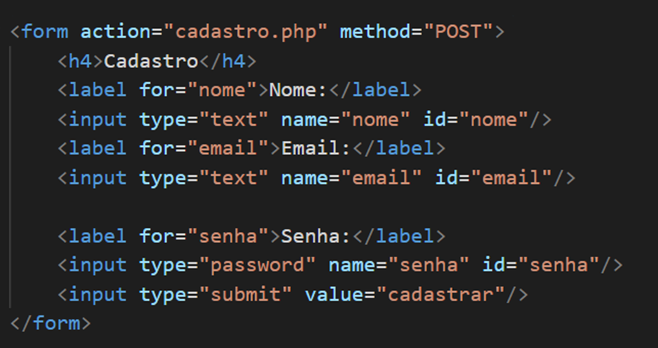

- O que são formulários em HTML? São estruturas usadas para coletar dados do usuário em uma página web. Eles são definidos pela tag < form > e podem conter campos como caixas de texto, botões, seleções e outros elementos de interação.
- Para que servem? Servem para coletar dados e interações dos usuários em um site e enviá-los para um servidor para processamento. Eles funcionam como uma ponte entre o usuário e o sistema, sendo usados em situações como login, cadastro, envio de mensagens, buscas, upload de arquivos e pesquisas.
- Função: Essa tag é responsável por definir um formulário em HTML. Ela envolve todos os campos e permite o envio dos dados inseridos pelo usuário.
- action: Define para onde são enviados os dados do formulário quando um formulário é enviado.
- method (GET e POST): O atributo method recebe como valor o método HTTP que o formulário irá utilizar para enviar os dados. HTTP (HyperText Transfer Protocol) é o protocolo responsável pela comunicação entre o navegador e o servidor. Entre os métodos mais utilizados estão o GET e o POST: o GET envia os dados pela URL, sendo menos seguro e mais utilizado em buscas, enquanto o POST envia os dados de forma mais segura, sem exibi-los na URL, sendo utilizado em situações como login e cadastro.
Como funciona o envio de dados? O envio de dados em um formulário HTML ocorre quando o usuário preenche os campos (como < input >, < textarea > e < select >) e clica no botão de envio. Nesse momento, as informações são coletadas e enviadas para um servidor, arquivo ou script definido no atributo action. Esse processo é controlado pelos atributos da tag < form >, que determinam para onde os dados serão enviados e como isso será feito (GET ou POST).

">